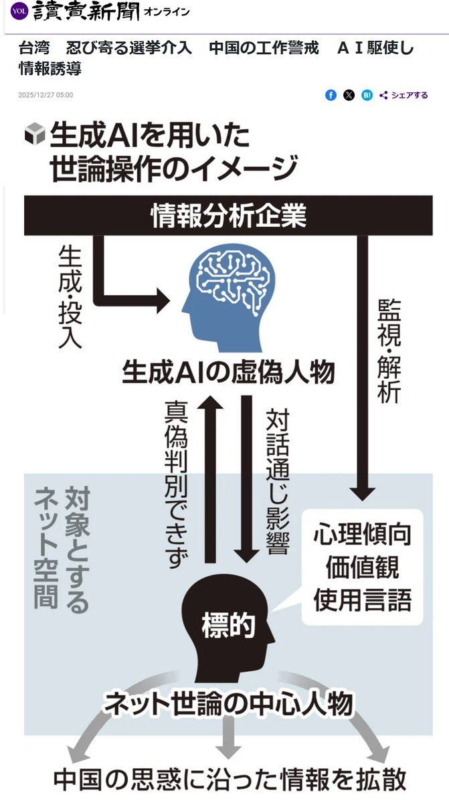
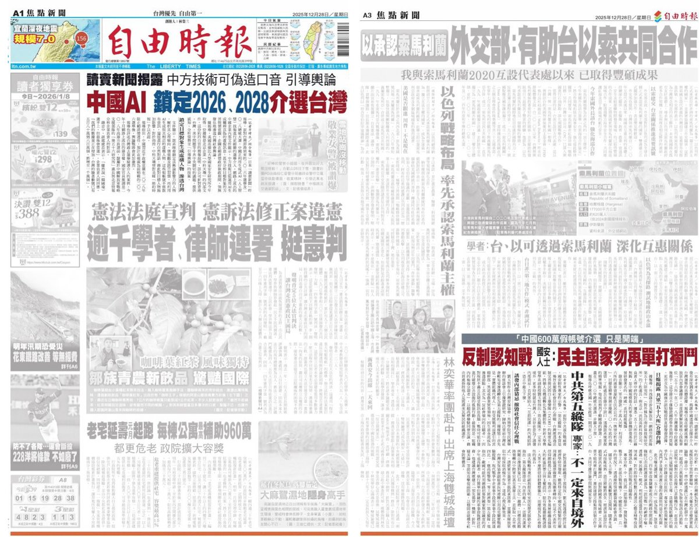
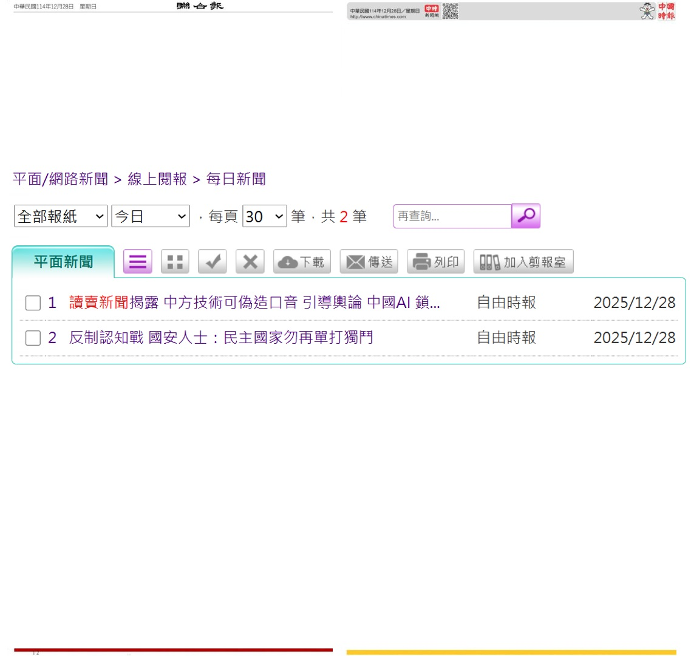

The Raven in the Rain🏳️🌈
@Raincandy_1937
RT @tseng_weichen: 兩小報看不到解放軍56所介選台灣的新聞
讀賣新聞昨揭露暗網的3段錄音，證實2018的韓流是解放軍56所參與、推動的，並已蒐控超過600萬個帳號，鎖定2026、2028大選進行介入。
自由時報放在頭版頭、A3版右下，大幅報導。
聯合報、…



曾韋禎
@tseng_weichen
兩小報看不到解放軍56所介選台灣的新聞
讀賣新聞昨揭露暗網的3段錄音，證實2018的韓流是解放軍56所參與、推動的，並已蒐控超過600萬個帳號，鎖定2026、2028大選進行介入。
自由時報放在頭版頭、A3版右下，大幅報導。
聯合報、中國時報，本身就是中國介選的工具，當然隻字未提。 https://t.co/7Ga63K51N0